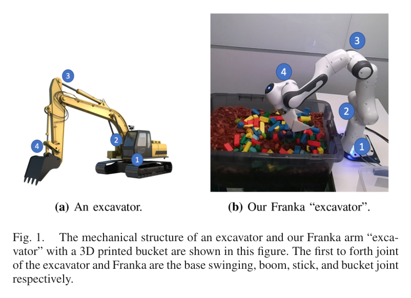
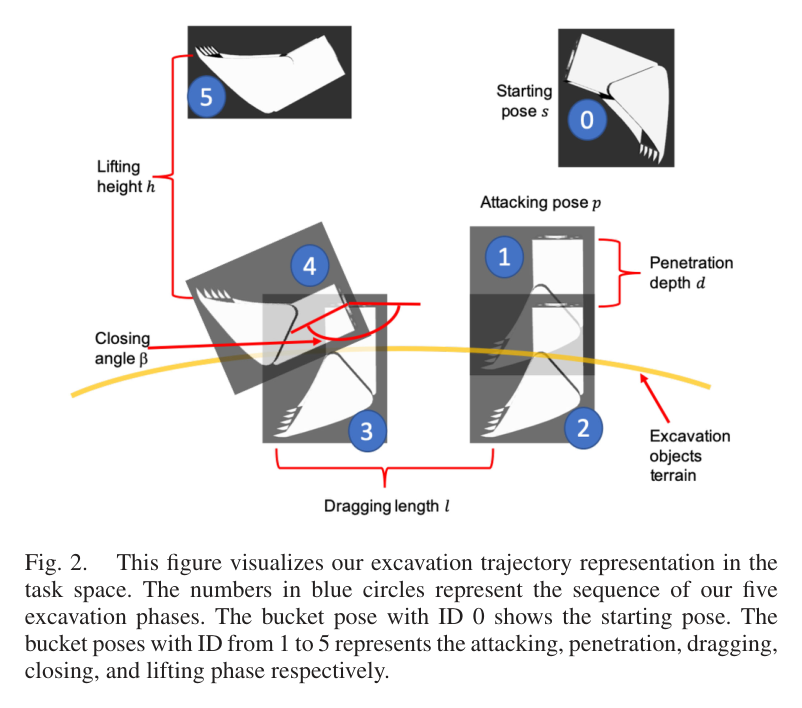
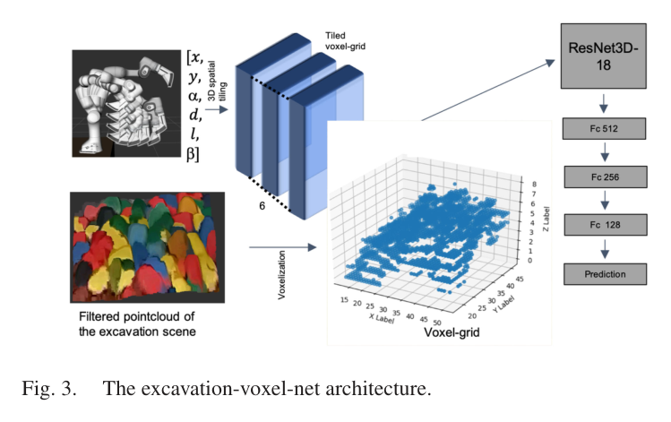
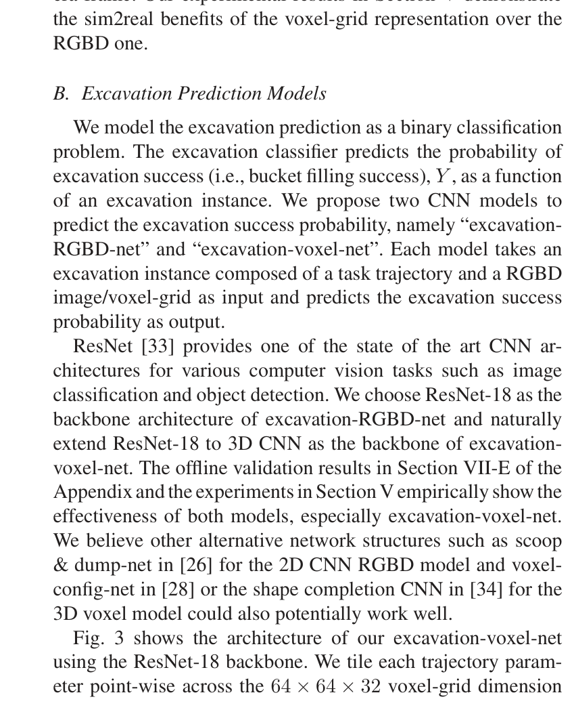
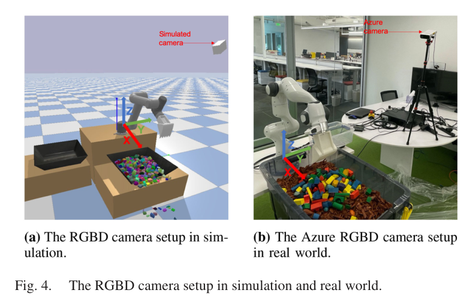
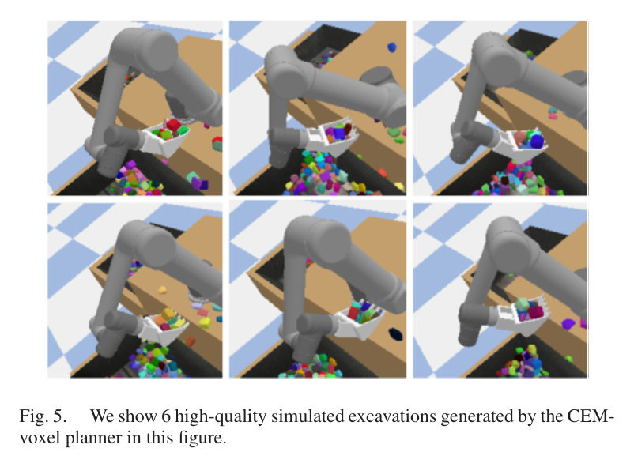
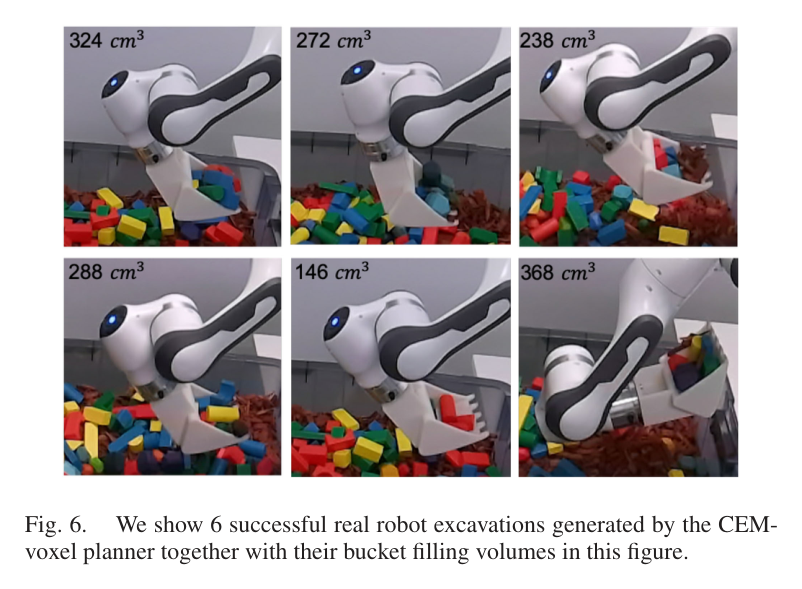
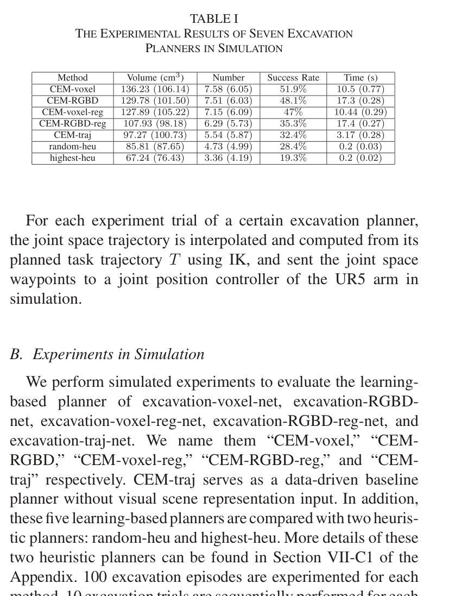
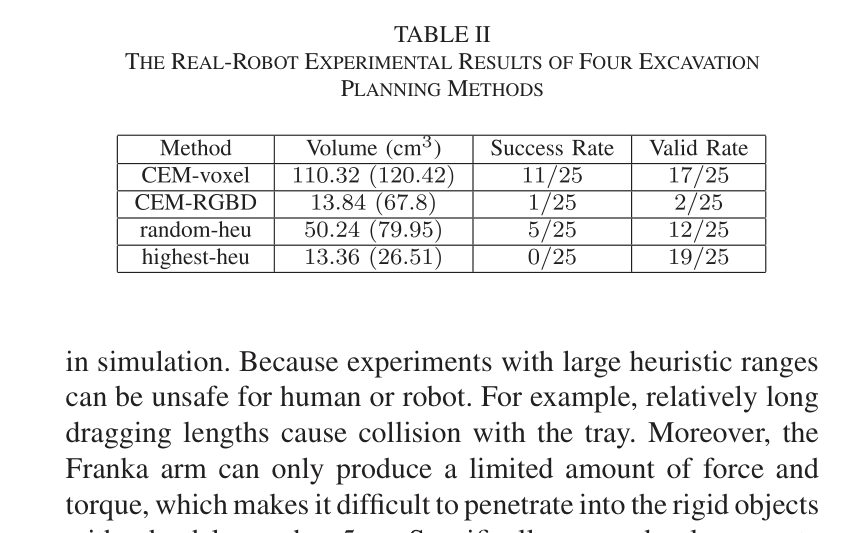

한줄 요약 — 불규칙 강체가 뒤엉킨 tray 장면을 카메라 외관 대신 64×64×32 occupancy voxel로 표현하고, 공격점·각도·관입깊이·끌기길이·닫힘각을 타일링한 7채널 입력에서 성공확률을 학습한 뒤 CEM으로 최적 궤적을 고른다. PyBullet UR5에서 학습한 계획기를 실제 Franka Panda로 옮겨 voxel 표현의 sim-to-real 이점을 보였다.
1.연구 배경 및 동기
불규칙 강체 군집에서 장면 의존 굴착을 계획하는 문제
광산 파쇄암이나 건설 폐기물처럼 단단하고 불규칙한 강체가 뒤엉킨 장면은 균질한 모래와 다르다. 물체마다 형상·질량·접촉 상태가 달라 버킷 관입 때 큰 저항과 걸림이 생기고, 한 물체의 이동이 주변 배열까지 바꾼다. 기존 연구는 토양·입상재 궤적이나 저수준 힘제어에 집중했으며, 시각 장면을 보고 다수 강체를 한 번에 많이 담을 궤적을 고르는 문제는 거의 다루지 않았다. 이 논문은 현재 장면 Z와 궤적 T의 조합으로 성공확률을 예측하고 이를 계획 목적함수로 쓴다.
학습을 실제 장비에 옮길 때 카메라 외관 차이가 큰 장애물이다. 시뮬레이터와 실제는 tray의 색·형상, 배경, 조명과 카메라 파라미터가 다르다. 저자들은 RGB-D 영상을 쓰는 모델과 tray 좌표계 점군을 voxel로 바꾸는 모델을 비교해 후자가 환경·카메라 변화에 덜 민감함을 검증한다. 궤적도 특정 로봇 관절각이 아니라 6차원 작업공간 변수로 표현해 PyBullet UR5의 경험을 실제 Franka Panda로 이전한다.

원문 Figure 1 · PDF p.3 — Fig. 1. The mechanical structure of an excavator and our Franka arm “exca- vator” with a 3D printed bucket are shown in this figure. The first to forth joint of the excavator and Franka are the base swinging, boom, stick, and bucket joint respectively.

원문 Figure 2 · PDF p.3 — Fig. 2. This figure visualizes our excavation trajectory representation in the task space. The numbers in blue circles represent the sequence of our five excavation phases. The bucket pose with ID 0 shows the starting pose. The bucket poses with ID from 1 to 5 represents the attacking, penetration, dragging, closing, and lifting phase respectively.
선행 연구의 한계
기존 토양·입상재 계획법은 균질한 재료를 가정해 불규칙 강체의 큰 형상·물성 편차와 상호 걸림을 충분히 표현하지 못한다.
기존 강체 굴착 연구는 단일 암석의 움직임 추정이나 저수준 admittance 제어에 집중해, RGB-D로 본 군집 장면에서 궤적을 선택하는 상위 계획 문제가 비어 있었다.
RGB-D 영상 기반 학습은 시뮬레이션과 실제의 색·배경·조명 및 카메라 내외부 파라미터 차이에 민감해 sim-to-real 전이가 불안정하다.
장면을 보지 않는 궤적 전용 데이터 기반 계획기는 물체가 놓인 위치와 빈 공간을 구분하지 못하므로 동일한 궤적 파라미터의 성공 여부가 장면마다 달라지는 문제를 처리할 수 없다.
이 연구의 기여
강체 군집 굴착의 성공 여부를 RGB-D 또는 voxel 장면과 6차원 작업공간 궤적의 함수로 예측하는 두 CNN 모델을 제안했다.
1cm 해상도의 tray 좌표계 occupancy voxel을 사용해 카메라·배경 의존성을 줄이고 실제 로봇 전이에서 RGB-D 모델보다 높은 성능을 보였다.
학습된 성공확률을 품질함수로 삼아 CEM이 후보 궤적의 Gaussian 분포를 반복 갱신하는 장면 의존 계획기를 구성했다.
두 휴리스틱, 장면 비의존 학습 기준선, 분류·회귀형 예측기를 시뮬레이션과 실제 실험에서 비교하고 굴착 데이터셋을 공개했다.
2.방법론 및 시스템 구성
입력은 RGB-D 카메라가 관측한 현재 강체 군집과 후보 굴착 궤적이다. 점군은 tray 좌표계로 변환하고 지정된 굴착 cuboid만 남긴 뒤 64×64×32, 0.01m 해상도의 occupancy voxel로 이산화한다. 궤적 T=(x,y,α,d,l,β)는 공격점의 평면 좌표, 공격각, 수직 관입깊이, 베이스 방향 끌기길이, 닫힘각을 뜻한다. 공격점의 z는 height map에서 얻고 인양 높이는 로봇 베이스 높이로 고정한다. 공격·관입·끌기·닫기·인양의 다섯 phase를 보간한 뒤 IK로 관절 waypoint를 계산한다.
예측 단계에서는 장면 voxel 한 채널과 여섯 궤적 파라미터를 전체 격자에 타일링한 여섯 채널을 합쳐 7채널 입력을 만든다. 3D로 확장한 ResNet-18이 1000차원 특징을 만들고 512-256-128 fully connected 층과 sigmoid가 굴착 성공확률을 출력한다. 계획 단계에서는 random heuristic으로 만든 256개 궤적으로 6차원 Gaussian을 초기화한 후 CEM을 다섯 번 반복한다. 매 반복에서 256개를 평가하고 상위 64개로 분포를 갱신하며, 마지막 분포의 64개 중 성공확률이 가장 높고 IK 및 공격점 범위가 유효한 궤적을 실행한다.
처리 파이프라인
1
tray 좌표계 점군 정규화
RGB-D depth를 점군으로 바꾸고 카메라 좌표계에서 tray 좌표계로 변환한다. 지정 굴착 cuboid 밖의 점을 제거해 바닥·주변 구조물을 배제한다. 카메라가 바뀌어도 tray 보정만 유지하면 같은 표현을 쓸 수 있다.
2
1cm occupancy voxel 생성
필터링 점군을 64×64×32, 0.01m 격자로 voxelize한다. 점유 여부만 남겨 시뮬레이터와 실제의 색·조명 차이를 버린다.
3
6차원 작업공간 궤적 구성
후보 T=(x,y,α,d,l,β)는 공격점, 각도, 관입깊이, 끌기길이, 닫힘각을 담는다. 표면 z와 고정 인양높이를 더해 다섯 phase의 pose를 만들고 로봇별 IK로 변환한다.
4
7채널 excavation-voxel-net 추론
여섯 궤적 스칼라를 전체 격자에 타일링해 장면 점유 채널과 결합한다. ResNet3D-18과 512-256-128 FC, sigmoid가 134cm³ 이상 굴착의 성공확률을 낸다. 비교용 회귀 모델은 smooth L1 loss를 쓴다.
5
CEM 후보 분포 최적화
random-heu가 만든 256개 궤적으로 Gaussian의 평균·공분산을 초기화한다. 다섯 iteration 각각에서 256개를 샘플링하고 예측 성공확률 상위 64개를 elite로 선택해 분포를 다시 맞춘다. 마지막에는 64개를 추가 샘플링하여 확률, IK 해 존재 여부, 공격점 범위를 동시에 만족하는 최고 후보를 고른다.
6
IK 변환과 위치제어 실행
선정된 작업공간 pose들을 보간하고 로봇 역기구학으로 관절 waypoint로 바꿔 내장 위치제어기에 보낸다. 실제 Franka는 강체 저항 때문에 z축 힘·토크 한계를 넘기 쉬워 관입 waypoint마다 버킷을 수평으로 앞뒤 2cm씩 교대 이동시켰다. 이 보조 동작은 계획기의 힘 적응이 아니라 실행 걸림을 줄이기 위한 규칙이다.
T는 6차원 작업공간 굴착 궤적, Z는 현재 장면의 RGB-D 또는 voxel 표현, W는 학습된 신경망 파라미터다. CEM은 f가 부여한 성공확률을 점수로 사용해 T의 샘플링 분포를 갱신한다.

원문 Figure 3 · PDF p.4 — Fig. 3. The excavation-voxel-net architecture.
3.핵심 기술
카메라 외관을 제거한 voxel sim-to-real 표현
voxel의 목적은 학습과 배포 사이에서 유지될 기하를 선택하는 데 있다. RGB-D 영상은 tray 색, 바닥, 조명과 카메라 투영에 영향을 받지만 tray 좌표계 occupancy는 강체가 차지한 공간만 남긴다. 실제에서 CEM-RGBD의 공격점이 tray 가장자리로 몰리고 예측확률도 거의 0이 된 반면 CEM-voxel은 가장 높은 평균 굴착량을 기록했다.
격자 크기 64×64×32, 해상도 0.01m
장면 1채널과 궤적 6채널을 결합한 7채널 입력
환경 주변과 카메라 intrinsics·extrinsics에 대한 의존 감소
작업공간 궤적과 하드웨어 간 이전
작업공간의 공격점·방향·길이·닫힘각을 공통 표현으로 쓰면 모델이 UR5나 Franka의 특정 관절 배치를 직접 보지 않는다. reach가 850mm와 800mm로 비슷한 두 arm에서는 같은 버킷 경로를 각 로봇의 IK로 바꿀 수 있다. 다만 이는 운동학적 이전이며 유압 동역학이나 큰 접촉력의 동일성을 보장하지 않는다.
공격-관입-끌기-닫기-인양의 다섯 phase
6개 파라미터 T=(x,y,α,d,l,β)
로봇별 IK와 위치제어기로 하위 실행을 분리
장면 조건부 성공 예측기
같은 궤적도 물체 배치에 따라 성공하거나 충돌하므로 장면과 궤적을 함께 보아야 한다. ResNet3D-18은 점유 구조와 궤적의 공간 관계를 추출하고 134cm³ 이상을 성공으로 학습한다. 장면 의존 계획기는 장면 비의존 CEM-traj보다, 분류형은 같은 표현의 회귀형보다 우수했다.
ResNet3D-18의 1000차원 특징
FC 512-256-128과 sigmoid 출력
분류 기준 134cm³, 전체 450cm³ 버킷의 약 30%
CEM 기반 비미분 샘플링 계획
IK 유효성, 공격점 범위와 비선형 신경망 점수를 함께 다루기 위해 CEM을 사용한다. elite 샘플로 Gaussian을 반복 재추정해 높은 성공확률 영역에 후보를 집중한다. 다만 voxel 모델 기반 계획이 10초를 넘어 짧은 주기의 접촉 재계획에는 느리다.
초기·반복 후보 256개
elite 64개, 총 5회 분포 갱신
최종 64개 중 확률·IK·공격점 유효성을 만족하는 최고 후보 선택

원문 Figure 3 · PDF p.4 — Fig. 3 shows the architecture of our excavation-voxel-net using the ResNet-18 backbone. We tile each trajectory param- eter point-wise across the 64 × 64 × 32 voxel-grid dimension
4.실험 결과
실험 환경·장비·데이터
시뮬레이션은 PyBullet의 UR5 6-DOF arm에서 4개 관절만 굴착 관절로 사용하고 두 wrist 관절은 고정했다. 3D 설계 버킷의 전체 체적은 450cm³이며 내장 simulated RGB-D camera로 장면을 취득했다.
실제 장비는 7-DOF Franka Panda에서 shoulder pan/lift, elbow lift, wrist lift 네 관절을 사용하고 나머지 세 관절을 고정했다. 3D 프린트 버킷과 Azure Kinect RGB-D camera를 사용했다.
실제 버킷의 z방향 힘 범위는 -50~150N, 토크 범위는 -10~10Nm로 보고됐고, 관입 중 걸림을 줄이기 위해 매 waypoint에서 2cm 수평 교대 이동을 추가했다.
실험 프로토콜
시뮬레이션은 방법별 100 episode, episode당 연속 10회 굴착으로 총 1000 trial을 수행했다.
134cm³ 이상을 성공으로 정의하고 실제에서는 계획·실행 성공과 IK 및 힘·토크 한계를 포함한 valid rate도 계산했다.
비교 기준
random-heu와 highest-heu의 두 휴리스틱 계획기
장면 입력 없이 궤적만 학습한 CEM-traj
RGB-D 장면을 쓰는 CEM-RGBD
회귀 예측기를 쓰는 CEM-voxel-reg와 CEM-RGBD-reg
평가 지표
굴착된 강체의 총 체적과 물체 개수
134cm³ 임계값 기반 굴착 성공률
유효 계획·실행 비율과 계획 계산시간
시뮬레이션-실제 전이 후 평균 굴착량과 버킷 충전율

원문 Figure 4 · PDF p.5 — Fig. 4. The RGBD camera setup in simulation and real world.
핵심 결과 해석
시뮬레이션에서 CEM-voxel은 평균 136cm³, 전체 버킷의 30.2%를 굴착해 일곱 계획기 가운데 굴착 체적·물체 수·성공률이 가장 좋았다. 장면을 함께 보는 CEM-voxel, CEM-RGBD와 CEM-voxel-reg가 두 휴리스틱 및 장면 비의존 CEM-traj를 큰 폭으로 앞섰고, 같은 입력 표현에서는 분류형이 회귀형보다 우수했다. 이는 현재 물체 배치와 후보 궤적의 상호작용을 모델링하는 것이 중요하다는 근거다. 다만 voxel·RGB-D 기반 CEM 계획은 한 궤적당 10초 이상이 걸려 0.2초인 휴리스틱보다 계산비가 컸다.
실제 Franka에서는 CEM-voxel이 평균 110cm³, 버킷의 24.4%를 담아 비교한 네 방법 중 가장 높았다. 반면 CEM-RGBD는 실제 영상의 sim-to-real 차이 때문에 공격점이 tray 가장자리로 치우쳐 충돌·무효 실행을 만들었고, random-heu보다 나쁘며 highest-heu와 비슷한 수준으로 떨어졌다. voxel 계획도 강체 저항 때문에 힘·토크 한계를 넘는 무효 trial이 있었지만, 작업공간 표현으로 UR5 학습 모델을 Franka에 옮기고 RGB-D보다 안정적인 장면 조건부 궤적을 고른 결과는 확인됐다.
정량 결과
평가 항목
정량 결과
조건·맥락
원문 근거
CEM-voxel 평균 굴착 체적
136cm³ (버킷 체적의 30.2%)
PyBullet UR5, 방법별 1000회 시뮬레이션 굴착
PDF p.6
CEM-voxel 실제 평균 굴착 체적
110cm³ (버킷 체적의 24.4%)
Franka Panda, 방법별 25회 실제 굴착
PDF p.7
성공 판정 임계값
134cm³ (약 30% bucket filling)
시뮬레이션과 실제 실험에 공통 적용
PDF p.5
CEM 장면 기반 계획시간
10초 초과/궤적
CEM-voxel·CEM-RGBD 및 두 회귀형 계획기, 시뮬레이션
PDF p.6
실패 사례와 경계조건
실제 CEM-RGBD는 sim-to-real 외관 차이로 공격점이 tray 가장자리에 몰려 충돌하고 예측 성공확률도 거의 0으로 내려갔다.
큰 강체 저항, 관입 중 걸림과 tray 충돌이 Franka의 힘·토크 한계를 초과해 계획은 있어도 실행이 무효가 되는 사례가 발생했다.
유효 IK가 없는 후보는 실행할 수 없고, 안전 때문에 실제 휴리스틱의 관입·끌기 범위를 시뮬레이션보다 좁혀야 했다.
현재 계획은 이번 한 번의 체적만 탐욕적으로 최적화하므로 다음 굴착을 어렵게 만드는 물체 재배열을 비용에 반영하지 않는다.

원문 Figure 5 · PDF p.6 — Fig. 5. We show 6 high-quality simulated excavations generated by the CEM- voxel planner in this figure.

원문 Figure 6 · PDF p.7 — Fig. 6. We show 6 successful real robot excavations generated by the CEM- voxel planner together with their bucket filling volumes in this figure.
5.한계 및 향후 연구
현재 한계
작은 tray와 로봇 arm 위치제어 실험이어서 실제 유압 굴착기의 큰 작업공간, 밸브 지연, 동역학과 암석 저항을 재현하지 못한다.
현재 굴착량만 최대화하는 단발성 탐욕 계획으로 연속 굴착의 누적 생산성이나 미래 장면 가치를 고려하지 않는다.
관입 실행이 힘 피드백 없는 위치제어에 의존해 강체 걸림과 힘·토크 제한 초과에 취약하다.
voxel CEM 계획이 10초를 넘고, 로컬 PDF에 보충 Appendix가 포함되지 않아 데이터 수·학습 세부의 완전한 재현성이 제한된다.
향후 연구
연속 굴착의 장기 누적 체적과 장면 재배열을 보상으로 사용하는 심층강화학습 계획기로 확장한다.
힘·토크 또는 유압 압력 피드백을 이용하는 force/residual control로 큰 저항에서 궤적을 수정하고 걸림을 완화한다.
실제 굴착기 arm으로 이전해 유압 지연, 암석 혼합재, 대규모 작업공간에서 작업공간 표현의 일반성을 검증한다.
point-cloud encoder와 병렬 후보평가, warm start를 도입해 CEM 계획시간을 줄이고 온라인 재계획 주기를 확보한다.
6.한마디로 정리
핵심 방법은?
tray 좌표계 1cm occupancy voxel과 6차원 작업공간 궤적을 7채널로 결합한 ResNet3D-18 성공예측기를 학습하고, CEM이 그 확률을 최대화하는 IK 유효 궤적을 선택한다.
핵심 결과는?
CEM-voxel은 시뮬레이션 평균 136cm³와 실제 Franka 평균 110cm³를 기록해 휴리스틱·장면 비의존·RGB-D 계획기보다 우수했고 voxel 표현의 sim-to-real 이점을 보였다.
한계는?
작은 로봇 arm의 위치제어와 단발 체적 최적화에 머물며, 10초 이상의 계획비용·힘 한계·실제 유압 굴착기 및 연속작업 검증이 남아 있다.
필드 굴착기에 이식할 핵심은 작업공간 궤적과 장면 조건부 성공평가의 분리다. 대형 굴착기에서도 LiDAR/RGB-D 점군을 장비 기준 voxel로 정규화하고, 상위 계획기가 공격 pose와 primitive를 고른 뒤 장비별 IK·유압제어가 실행하도록 계층화할 수 있다. 이는 하나의 인지·계획 모델을 크기가 다른 장비에 재사용하려는 AES 구조와 맞닿는다.
실제 암석 굴착은 보이는 기하만으로 결정되지 않는다. 압력·힘·슬립으로 성공확률을 온라인 보정하고, 한 번의 체적 대신 여러 cycle의 잔여 pile 형상과 걸림 위험을 평가해야 한다. 이 연구는 이후 기하표현 RL과 오프라인 RL로 이어지는 장면 표현-상위 action 선택-접촉 하위제어 계보의 출발점이다.
LiDAR 점군을 장비 기준 voxel/point-cloud로 변환해 카메라 외관과 설치 차이에 덜 민감한 공격점 계획 입력으로 사용할 수 있다.
상위 정책은 6차원 굴착 primitive를 선택하고 하위 유압 force controller가 저항에 따라 궤적을 보정하는 계층형 구조로 확장할 수 있다.
예측확률에 토양·암석 분류, 버킷 압력, 이전 cycle의 실제 적재량을 추가하면 현장별 성공모델을 지속 보정할 수 있다.
장기 보상은 누적 적재량, 걸림률, 힘 제한 초과, 잔여 pile 접근성을 함께 포함해 탐욕 계획의 한계를 줄여야 한다.
7.전체 그림·표
본문 핵심 위치에 배치하지 않은 원문 Figure와 Table을 원문 페이지 순서로 수록한다.

원문 Table I · PDF p.5 — TABLE I THE EXPERIMENTAL RESULTS OF SEVEN EXCAVATION

원문 Table II · PDF p.7 — TABLE II THE REAL-ROBOT EXPERIMENTAL RESULTS OF FOUR EXCAVATION